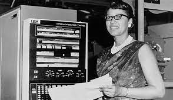

Dorothy Vaughan est née en 1910 à Kansas City, elle a suivi le lycée de Beechurst puis a obtenu une licence en mathématique avec mention. Après cela pour pouvoir gagner de l’argent pendant la grande dépression suite au krach boursier de 1929 elle va obtenir un poste de professeure de mathématiques dans Robert Russa Moton High School. Elle y resta jusqu’en 1943, car La Deuxième Guerre Mondiale sévissait. Elle prit un travail temporaire de guerre : elle travaillait pour la NACA une agence américaine pour l’aéronautique dans la section ouest de calculs.
Elle était avec des femmes noires grâce au décret 8802, mais tout de même séparées des femmes blanches en raison des lois de Jim Crow. Durant ce temps là elle a collaboré pour étudier la programmation dans les calculs. En 1949 elle devint directrice de toutes les Afro-américaines de sa section. Puis en 1958 la NACA devient la NASA et intègre la division des techniques numériques puis à la division de l’analyse et du calcul. Ainsi elle aida à la conquête de la Lune même si l’on oubli souvent ces personnes malgré leur rôle des plus majeurs. Elle prit sa retraite en 1958 et mourut en 2008 à l’age de 98 ans.